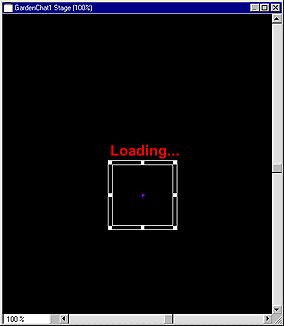

Using Director > Director 8 Tutorial > Control streaming
Using Director > Director 8 Tutorial > Control streaming |
Control streaming
Streaming from the Internet causes a movie to play as soon as the content required for the first frame is downloaded to your user. The remaining content downloads in the background. Streaming dramatically shortens the perceived download time of a movie.
Create a looping introduction for a streaming movie
To create a movie that streams well, it's often a good idea to start with an introductory scene that downloads quickly and loops until the next scene has downloaded. In this tutorial, you'll add a loading Flash movie that lets your user know the rest of the movie is downloading.
1 |
Drag the Black Shape cast member to frame 1 of channel 1 in the Score. Rather than extending 28 frames, the sprite fits in the 10 available frames. |
2 |
On the Sprite tab of the Property Inspector, resize the sprite by setting the Left, Top, Right, and Bottom options to 0, 0, 450, and 500, respectively. |
3 |
In the Score, select frame 1 of channel 2, and drag the Loading text cast member to an area just above the middle of the Stage. |
4 |
Select the Loading text sprite and set its ink to Background Transparent. |
5 |
Drag the Loadloop cast member to frame 1 of channel 3 in the Score. This cast member, a Flash movie, will add interest to the movie while your user waits for more of the frames to download.
 |
6 |
On the Stage, drag the Loadloop Flash movie so that it's centered underneath the text. |
7 |
From the Library List pop-up menu, choose Internet > Streaming. |
8 |
Drag the |
9 |
In the Parameters dialog box, type 10 in the Wait for Media in Frame field, then click OK. |
You are telling Director to play the Flash movie until all of the media in frame 10 downloads. Once the sprites in frame 10 download, the looping behavior ends and the movie proceeds to play. |
|
Note: You can view looping behaviors when you play the movie from a server.